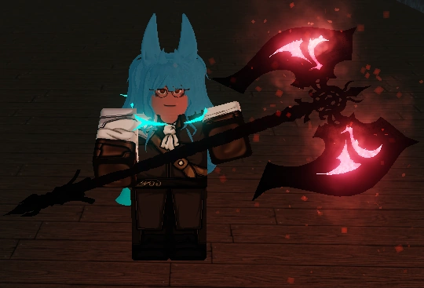
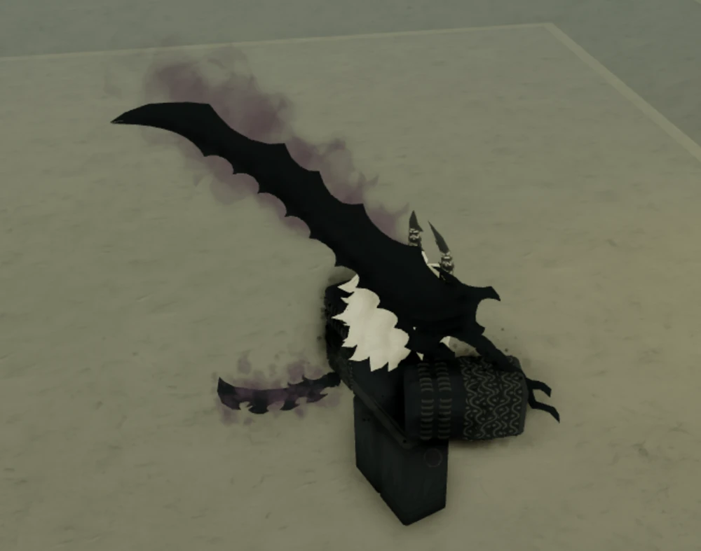
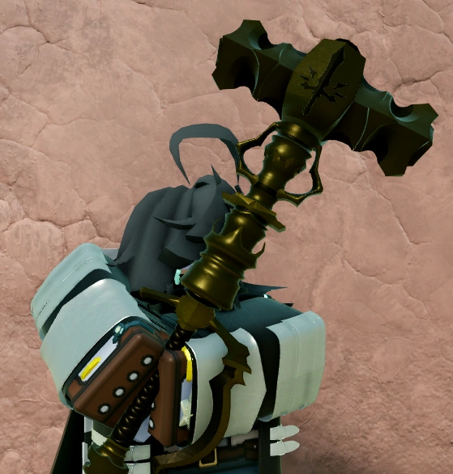
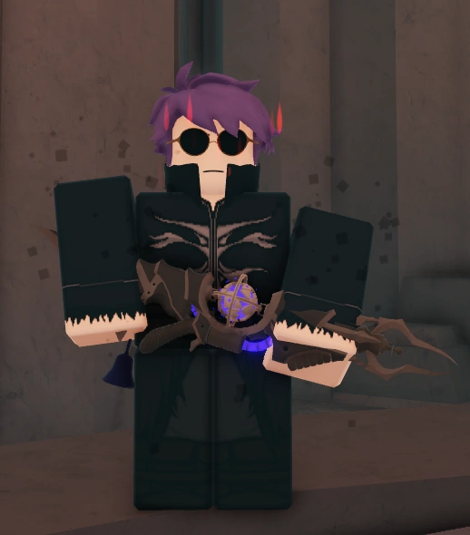
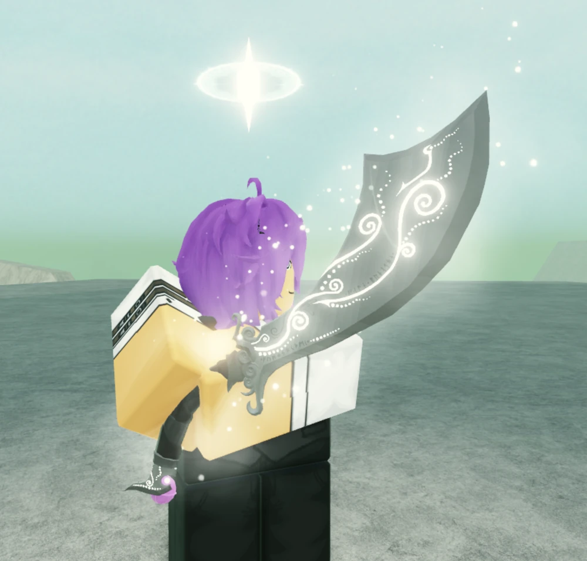

Frostdraw
Лёд дает пользователю возможность вызывать иней и леденящий холод, предоставлет доступ к способностям, которые направлены на сужение зоны и замедление. Frostdraw немного медленнее по сравнению с другими элементами, но все же предлагает относительно быстрые и хитрые варианты нападения. Это означает, что настройка хорошо подойдет людям, которые придерживаются затяжному подхода в ведении боя.

Flamecharm
Огонь дает пользователю возможность создавать горение с помощью манны, предоставлет доступ к способностям, которые фокусируются на точечных и AoE-эффектах, в то же время обеспечивая сравнительно больший урон от других мантр, а также значительную полезность.

Shadowcast
Тьма - это элемент, который игрок должен разблокировать, но с которого он не может начать. он уникален тем, что высасывает ману из тех, кого поражают его мантры, и возвращает магический дар заклинателю. Это приводит к снижению наносимого урона, который, как правило, довольно низок. Заклинание теней применяет эффект черной частицы при попадании, который можно накапливать. Многие таланты заклинания теней сосредоточены на краже манны, уменьшения зрения и AoE.

Thundercall
Элемент молии дает пользователю возможность контролировать, заклинать и создавать гром и электричество, наделяя его способностями, которые направлены на ведение боя, оглушение и передвижение.

Galebreath
Ветер это элемент, который дает пользователю возможность манипулировать ветрами, вызывать их и управлять ими, предоставляя ему доступ к способностям, которые фокусируются на движении, метании снарядов и большом AoE. А также обладает способностью снижать скорость атаки при нанесении удара по противнику.
Элементальные оружия меняют свой цвет и партиклы в зависимости от выбранного пути элемента к которому он относися
Gran sudaruska
Basic path
Crystallization path
Ysleys Pyre Keeper
Basic path
Twisted puppets path
Ignition deepcrusher
Basic path
Scrapsinger path
Crypt blade
Basic path
Альтернативного варианта нет
Storm eye
Basic path
Surge path
Curved blade wind
Base path
Spectral path